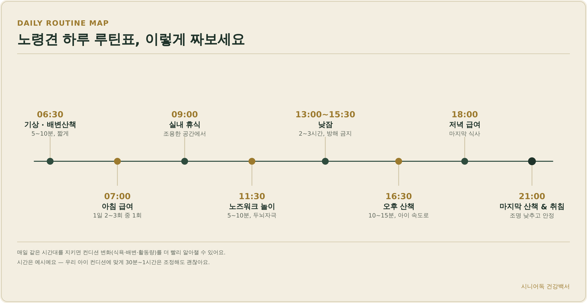
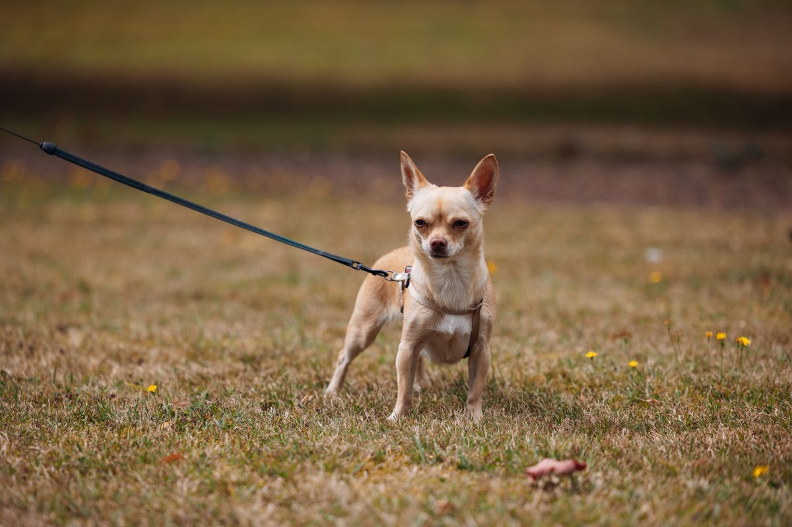
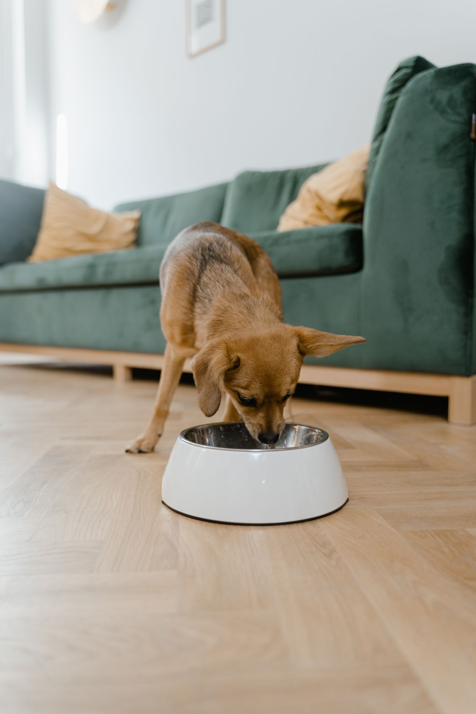
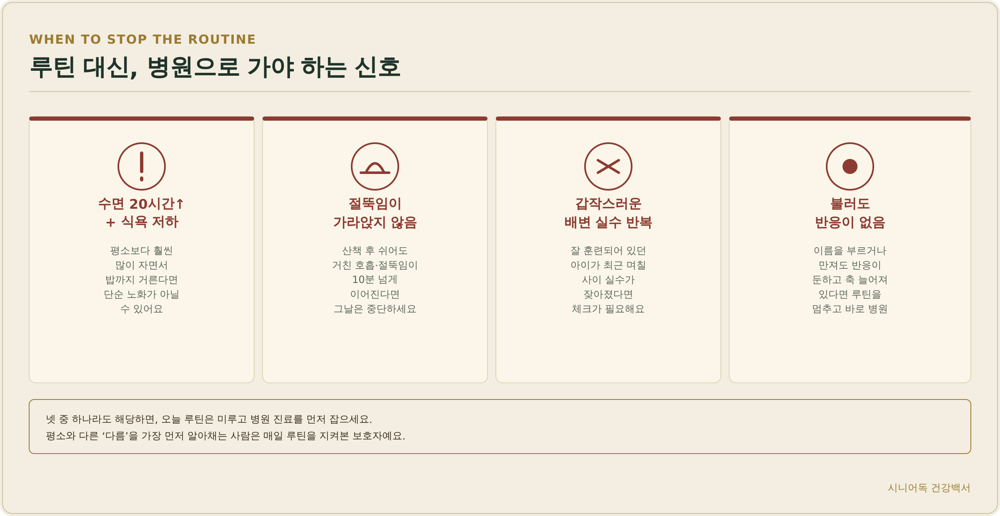
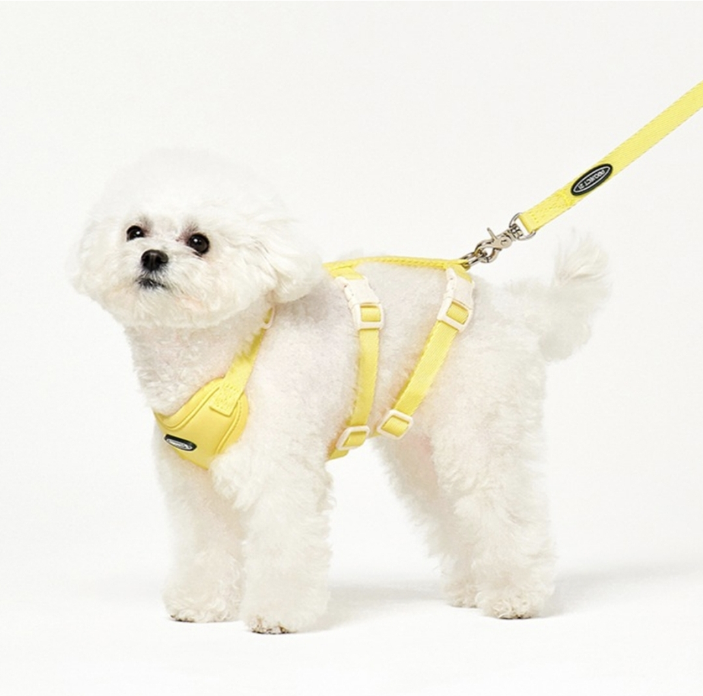
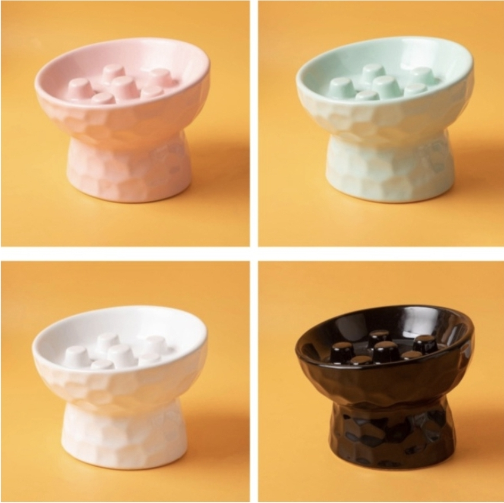

노령견과 함께하는
하루 루틴표 짜는 법
노령견은 어제와 오늘이 비슷해야 좋아요. 산책·급여·휴식 시간이 매일 들쭉날쭉하면 컨디션이 나빠져도 “원래 저랬나?” 하고 지나치기 쉽거든요. 반대로 루틴이 잡혀 있으면 식욕이 줄었다, 산책을 유난히 힘들어한다 같은 변화를 훨씬 빨리 알아챌 수 있어요. 오늘은 노령견 하루를 어떻게 짜면 좋은지, 산책·급여·휴식 각각 근거를 갖고 정리해드릴게요.

· 노령견 산책은 1회 10~20분씩 하루 1~2회, 아이 속도에 맞춰 짧고 자주가 정답이에요.
· 급여는 하루 2~3회로 나눠서, 휴식·수면은 하루 12~18시간이면 정상 범위예요.
· 수면이 20시간을 넘기며 식욕까지 떨어지거나, 산책 후 절뚝임이 안 가라앉으면 루틴 대신 병원부터 가세요.
- 왜 노령견에게 규칙적인 루틴이 중요할까
- 노령견 하루 루틴표 예시
- 산책, 얼마나 자주 얼마나 오래 해야 할까
- 급여, 하루 몇 번이 적당할까
- 휴식·수면, 얼마나 자야 정상일까
- 루틴에 도움되는 용품
- FAQ
왜 노령견에게 규칙적인 루틴이 중요할까
노령견은 몸의 변화가 서서히 오다가 어느 순간 눈에 띄게 나타나는 경우가 많아요. 매일 비슷한 시간에 산책하고 밥을 먹으면, 보호자가 “오늘따라 산책을 힘들어하네”, “밥을 반밖에 안 먹었네” 같은 미묘한 변화를 기준선(baseline) 대비로 알아챌 수 있어요. 노령견은 통증이 있어도 티를 잘 안 내는 경우가 많아서, 이런 ‘평소와 다름’을 가장 먼저 잡아내는 게 결국 매일 루틴을 지켜본 보호자예요.
노령견 하루 루틴표 예시
| 시간 | 활동 | 포인트 |
|---|---|---|
| 06:30 | 기상 · 배변 산책 | 5~10분, 짧게 |
| 07:00 | 아침 급여 | 1일 2~3회 중 1회 |
| 09:00 | 실내 휴식 | 조용한 공간에서 |
| 11:30 | 노즈워크 놀이 | 5~10분, 두뇌자극 |
| 13:00~15:30 | 낮잠 | 2~3시간, 방해 금지 |
| 16:30 | 오후 산책 | 10~15분, 아이 속도로 |
| 18:00 | 저녁 급여 | 마지막 식사 |
| 21:00 | 마지막 산책 & 취침 | 조명 낮추고 안정 |
시간은 예시일 뿐이에요. 우리 아이 생활 패턴에 맞게 30분~1시간 정도는 조정해도 괜찮고, 중요한 건 매일 비슷한 시간대를 지키는 것이에요.
산책, 얼마나 자주 얼마나 오래 해야 할까
노령견 산책은 1회 10~20분씩 하루 1~2회가 기본이에요. 젊었을 때처럼 길게 한 번 걷기보다, 짧게 여러 번 나누는 쪽이 관절 부담이 적어요. 보호자 보폭이 아니라 아이 속도에 맞춰 천천히 걷고, 가능하면 흙이나 잔디처럼 충격이 적은 바닥을 골라주세요. 산책 중 거친 호흡이 쉬어도 가라앉지 않거나, 절뚝이거나, 더 가려 하지 않으면 그 자리에서 멈추고 돌아오세요.

목줄보다는 하네스를 권장해요. 소형견은 기관지가 눌리면 협착증으로 이어지기 쉽고, 목 디스크나 척추 질환이 있는 노령견은 목줄이 목에 힘을 집중시켜서 부담을 더 줄 수 있어요. 하네스는 압력을 가슴과 몸통 전체로 분산시켜주기 때문에, 관절이나 목이 약해진 노령견에게 특히 더 적합해요.
급여, 하루 몇 번이 적당할까
노령견은 하루 2~3회로 나눠서 급여하는 걸 권장해요. 소화 기능이 젊을 때보다 느려져 있어서, 한 번에 많이 먹기보다 나눠 먹는 게 부담이 적고 공복으로 인한 구역질도 줄여줘요. 급하게 먹는 습관이 있는 아이는 위확장·위염전(GDV)처럼 위험한 질환으로 이어질 수 있어서, 천천히 먹도록 유도하는 식기를 함께 쓰는 걸 추천해요.

휴식·수면, 얼마나 자야 정상일까
노령견은 하루 12~18시간 자는 게 정상이에요. 관절 통증이나 다른 불편함 때문에 수면의 질이 낮아서, 낮 동안 짧은 낮잠을 여러 번 나눠 자는 경우도 흔해요. 낮잠 시간대에는 방해받지 않도록 조용한 공간을 마련해주세요.

| 신호 | 설명 |
|---|---|
| 수면 20시간 이상 + 식욕 저하 | 평소보다 훨씬 많이 자면서 밥까지 거른다면 단순 노화가 아닐 수 있어요 |
| 절뚝임이 가라앉지 않음 | 산책 후 쉬어도 거친 호흡·절뚝임이 10분 넘게 이어진다면 그날은 중단하세요 |
| 갑작스러운 배변 실수 반복 | 잘 훈련되어 있던 아이가 최근 며칠 사이 실수가 잦아졌다면 체크가 필요해요 |
| 불러도 반응이 없음 | 이름을 부르거나 만져도 반응이 둔하고 축 늘어져 있다면 루틴을 멈추고 바로 병원 |
넷 중 하나라도 해당하면 오늘 루틴은 미루고 병원 진료부터 잡으세요.
루틴에 도움되는 용품
산책은 관절 부담을 줄여주는 하네스, 급여는 천천히 먹도록 유도하는 식기가 있으면 루틴을 지키기가 훨씬 수월해져요.

노령견 관절보호 리프팅 하네스
목 대신 몸통 전체로 압력을 분산시켜주는 하네스예요. 손잡이가 있어 계단이나 문턱을 오를 때 살짝 들어 보조해줄 수도 있어요.
프로젝트21 강아지 리프팅 관절 보호 하네스 + 리쉬 세트 ↗
급체방지 슬로우피더 식기
그릇 안 돌기 구조가 급하게 먹는 속도를 자연스럽게 늦춰줘요. 위확장·위염전 위험을 줄이고 싶다면 급여 루틴에 더해보세요.
파스텔펫 반려동물 급체방지 세라믹 식기 ↗자주 묻는 질문
Q. 루틴표대로 매일 못 지키면 안 좋은가요?
A. 30분~1시간 정도 어긋나는 건 괜찮아요. 중요한 건 시간을 칼같이 지키는 게 아니라, 산책·급여·휴식이 매일 비슷한 순서와 리듬으로 반복되는 거예요.
Q. 노령견 산책을 너무 짧게 하면 운동 부족 아닐까요?
A. 짧게 자주 하는 게 오히려 관절에는 더 안전해요. 소형 노령견은 1회 10~20분씩 하루 1~2회로도 충분하고, 무리한 장시간 산책이 관절에 더 부담을 줄 수 있어요.
Q. 낮잠을 너무 많이 자는 것 같은데 괜찮을까요?
A. 하루 12~18시간 수면은 노령견에게 정상 범위예요. 다만 20시간을 넘기면서 식욕 저하나 다른 이상 신호가 함께 나타나면 병원 진료를 받아보세요.